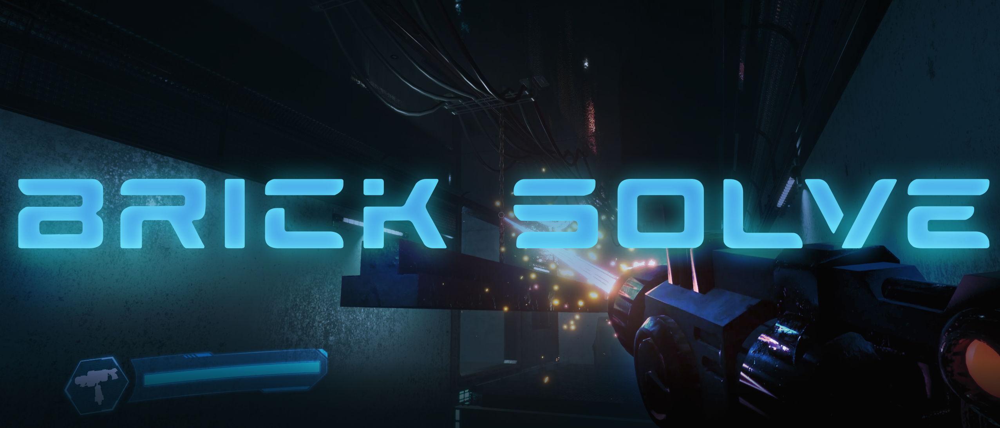
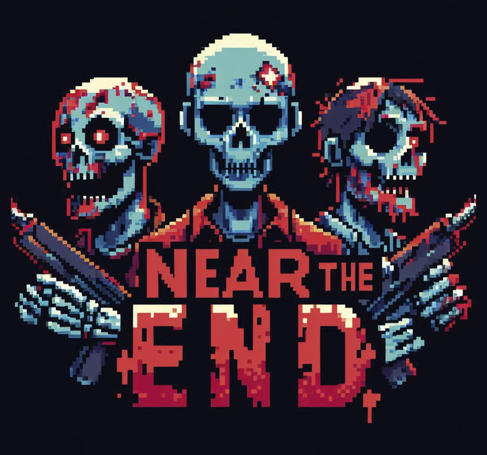
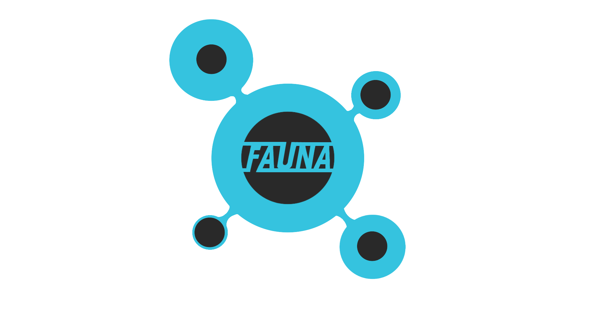
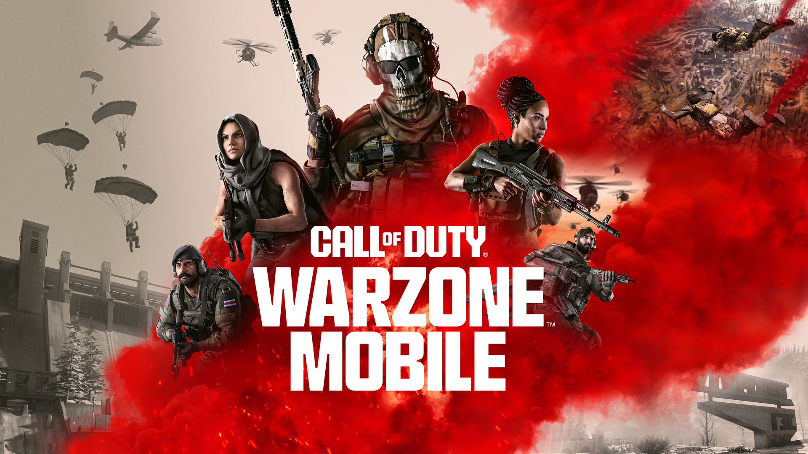
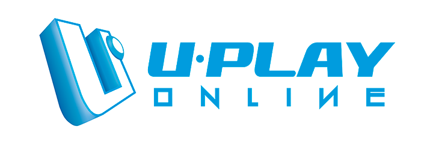

Soy desarrollador de videojuegos especializado en Game Development y Technical Art, con experiencia tanto en la industria como en proyectos independientes.
En Uplay Online trabajé como QA Tester, contribuyendo a la estabilidad y calidad de títulos en producción. Posteriormente, en Digital Legends participé como Technical Artist Intern, optimizando assets para Warzone Mobile y asegurando la integración visual en distintos dispositivos.
En mis proyectos personales he liderado equipos como programador principal y artista técnico, diseñando sistemas de gameplay, IA y mecánicas innovadoras.
Mi objetivo es aportar soluciones técnicas que combinen eficiencia, rendimiento y calidad visual, creando experiencias inmersivas para todo tipo de jugadores.
Portofolio de Proyectos

BRICKSOLVE - Proyecto Final
Lead Programmer & Technical Artist
BrickSolve es un proyecto final que mezcla puzzles dinámicos y acción. Mi rol fue diseñar e implementar las mecánicas principales de gameplay, la lógica de niveles y todos los sistemas técnicos. También desarrollé la UI, la funcionalidad del ray gun y optimicé tanto assets como niveles, logrando una experiencia fluida, desafiante y bien balanceada para el jugador.

NEAR THE END
Principal Programmer & Technical Artist
Near the End es un juego narrativo de acción donde el jugador debe sobrevivir en un mundo hostil. Lideré la programación de la IA enemiga avanzada, los controles del jugador y la arquitectura completa de gameplay. Además, desarrollé la UI e integré los elementos visuales para garantizar una experiencia coherente, inmersiva y con un ritmo de juego atractivo.

FAUNA - Proyecto Final
Main Programmer & Technical Artist
Fauna es un juego de exploración donde el jugador puede transformarse para interactuar con el entorno. Me encargué de crear las mecánicas de transformación, las interacciones ambientales y el scripting de niveles. También desarrollé la UI e integré los assets para construir una experiencia dinámica y envolvente, que invita al jugador a experimentar con su entorno.

Warzone Mobile - Digital Legends
Technical Artist Intern
Formé parte del equipo de Warzone Mobile, un título AAA para múltiples plataformas. Mi trabajo consistió en revisar y optimizar assets 3D, asegurando tanto la calidad visual como el cumplimiento técnico en un entorno de alto rendimiento. Contribuí a mejorar la estabilidad y la eficiencia del juego sin comprometer su calidad gráfica, participando en un pipeline propio de producciones de gran escala.

QA Testing - Uplay Online
QA Tester
En Uplay Online participé en el testeo de tres títulos comerciales, realizando pruebas exhaustivas para detectar y documentar errores críticos. Gracias a mi labor, el equipo pudo implementar correcciones que mejoraron la estabilidad y el rendimiento, contribuyendo a ofrecer experiencias más sólidas y pulidas para los jugadores. Esta experiencia me permitió comprender a fondo la importancia de la calidad en todas las fases del desarrollo.
Próximo Proyecto
Actualmente estoy trabajando en prototipos experimentales con Unreal Engine 5, explorando tecnologías de vanguardia como Nanite y Lumen para crear mundos más detallados y sistemas de iluminación realista. Mi objetivo es combinar innovación técnica y diseño de gameplay, desarrollando experiencias de próxima generación que unan rendimiento, calidad visual e ideas frescas en mecánicas jugables.
Contacto
¿Tienes un proyecto interesante? ¿Buscas un desarrollador con experiencia en gameplay y optimización técnica? Me encantaría escuchar sobre tu próximo proyecto y cómo puedo contribuir a hacerlo realidad.
-
Dirección
Rambla Josep Anselm Clavé, 15
Cornellà de Llobregat
Barcelona, España
-
Teléfono
+34 694 47 57 11
-
Email
javierlopez3482@gmail.com
-
Idiomas
Español (Nativo)
Catalán (Nativo)
Inglés (Profesional)

{kind=link}
{kind=link}
{kind=link}
{kind=link}
{kind=link}
{kind=link}